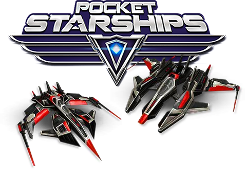

While small cap mobile gaming stock SPYR, Inc. (OTCQB: SPYR) may not be well known outside of the gaming industry, its well positioned in both the mobile gaming and the burgeoning esports market for growth. This also makes the stock a possible acquisition target by bigger players in a space that's already abuzz with M&A activity. To fully appreciate just what a hidden gem this company is though, you have to take a step back and look at the landscape of two different market's nobody saw coming just a few years ago.
It's hard believe, but it was only ten years ago that mobile gaming was in its infancy, following the debut of the Apple iPhone. Indeed, 'mobile gaming' wasn't even a term at the time. What a difference a decade can make!
It leads one to wonder what the digital landscape will look like ten years from now. After all, a decade ago, nobody could have imagined mobile games would become the $40 billion market VentureBeat says it is now. By that same token, investors are also certainly wondering which companies will be the ones to get the market from where it is today to where it's going to be in 2027.
As it turns out, glimpses of the future are starting to come into view.
Ever heard of esports? Don't sweat it if you've never heard the term... that's kind of the point. This is a fairly new concept, and potent simply because most investors have yet to connect the dots.
esports—short for electronic sports—is (literally) an organized, tournament-driven league of video game play. Not only do these athletes get paid to play, fans pay to watch them play. Some of the leagues are single-player contests, while others are team-based, where a group of gamers work together to complete a virtual mission or achieve a collective goal. While gamers love to play, like traditional sports fans, they love to watch the pros play the same game at a much higher caliber. Fans watch the event online, or sometimes fill up stadiums to watch the events on big screens... tens of thousands at a time.
And the numbers involved are big... REAL BIG.
Research firm SuperData has estimated the esports market alone earned $892.8 million in revenue last year when looking at every dollar it ultimatly generates, and this figure is expected to rise to over $1 billion in 2017 to reach the $1.23 billion level by 2019 with big name advertisers and sponsors like Coca-Cola and Nissan already starting to pour money into the niche.
SPYR Has a Standout Game That Could be the Next esports Hit
As for where SPYR (pronounced 'spire', by the way) and its Pocket Starships game fit into the picture, this is where things get really exciting.
Pocket Starships is a Massively Multiplayer Online (MMO) free-to-play/freemium action game where players can build and pilot numerous starships in real-time space battles, recruit players and form strong alliances, and battle with and against thousands of other players worldwide on a quest for galactic domination. In other words, it's a lot of fun. And, as much as casual gamers like to play, they love watching other, better gamers demonstrate an almost artistic proficiency, kind of like when a quarterback completes a pass to a wide receiver in a way that doesn't seem possible.
This game is unlike most other games out there, however, and it makes a HUGE difference.
How is it different? Pocket Starships can be played in real-time with multiple players participating regardless of the kind of device each player is using. In other words, a gamer in New York can play on a personal computer, doing battle against a gamer in California who's playing on an Android tablet, who's teamed up with a player in Hawaii using an iPhone.... you get the idea. It's a true cross-platform, real-time, multiplayer video game, and works equally well on all devices. That flexibility makes it appealing to a wide array of gamers, and therefore makes it appealing to a wide number of sponsors... sponsors that drive about 3/4 of the esports industry's revenue. It's very rare to see a game of such quality and depth be that flexible.
See, though the esports market has been taking shape for a few years now, it's been missing the boat, so to speak. The esports opportunity for mobile games could be five times bigger than PC-only games like League of Legends—one of the esports world's favorite digital venues—not just because of the sheer number of mobile devices there are compared to personal computers, but because downloads of mobile games can be done anytime, anywhere, in a just a few seconds.
The newest chapter in the rise of esports: Acquisitions; and plenty of them. Industry news website Pocketgamer listed the deals in the video gaming space, and there were too many to show you here. Even just these highlights, however, make the point:
And when you look just a little further back in time, the deals get even bigger, and come from bigger companies. A couple of years ago e-commerce giant Amazon.com spent nearly a billion dollars to acquire a company called Twitch, which simply lets people watch other people play video games online. Then there's the recent success of Pokémon Go (Nintendo), which melded the real world with the gaming world using so-called augmented reality. Nintendo didn't build all of that game itself—much of the technology needed to make the augmented reality game work so well on smartphones was actually garnered through acquisitions that total well into the tens of millions of dollars. In February of last year, game publisher Activision-Blizzard spent $5.9 billion to purchase King Digital, which makes the wildly popular Candy Crush game.
The land-grab is on. Even the Wall Street Journal noticed it, saying last year "A record year in videogame deal making is turning attention to smaller mobile-game developers now that most bigger targets have been gobbled up." Digi-Capital estimated that by the time 2016 came to a close, $30 billion had been spent on video game deals.
Take the hint.
"A record year in video game deal-making is turning attention to smaller mobile-game developers now that most bigger targets have been gobbled up." - Wall Street Journal
That being said, it's not just Pocket Starships that would be of interest to a potential buyer. SPYR, Inc. has plenty to offer any suitor in that it has developed and published a diverse range of fun and engaging social games for mobile devices:
More games are on the way though. SPYR, Inc.'s growth strategy calls for publishing between four and six games per year, through a combination of organic growth and acquisitions focused on mobile applications and game development.
By engaging in strategic partnerships, SPYR, Inc. is able to publish new games and recommend content for existing games to keep gamers engaged and to further accelerate growth. Makes sense. Developing games is difficult, risky, and can be expensive if it doesn't excite players. That's why SPYR has focused on getting good at spotting games with a lot of potential that just need the right tweak.
As validation of the strategy, earlier this year Swedish game developer Gaming Corps came right out and said it' changing its strategy from game-development to game-acquisitions. Point being, SPYR has its finger on the pulse of how this business works.
And there's no way to say the company doesn't have more than its fair share of the right, experienced, brilliant personnel.
Lars Koschin isn't exactly a household name... depending on your household. For the 1.8 billion global video gamers, the name is familiar. Koschin is one of the premier developers of multiplayer online games, and was involved with a company called Wargaming when it created the hugely successful MMO game called 'World of Tanks.' SPYR says that game, by the way, generated $1.3 billion worth of revenue over the course of the prior three years.
Koschin was also one of the creators of early and popular MMO title 'Runes of Magic,' and a co-founder of Gamigo... one of the gaming industry's biggest online game magazines and MMO publishers.
In other words, he's got the chops. If Koschin is involved, it's going to be good.
And it has been. Largely following the same formula as World of Tanks, Pocket Starships should at least yield similar success. In fact, it's likely to create more monetary success, should it become one of the preferred battlegrounds within the esports world like we think it will.
It's not just big names like Koschin getting on board though. A guy named Mike Turner also joined the fold in mid-2016, bolstering the company's roster.
An online games industry veteran, Mike has held leadership roles for companies such as Wargaming America, Inc. (the developer and publisher of World of Tanks), Big Collision Games and FASA Studios at Microsoft. While at Wargaming, Turner drove partnership activities for Wargaming's own esports organization in the Americas, the Wargaming.net League. The League is the pinnacle of competition where pro gamers from around the world compete for cash prizes and worldwide recognition. Having previously delivered partnerships with gaming market leaders like Twitch, Intel, & Nvidia for Wargaming, Mike intends to take SPYR's flagship game, Pocket Starships in a more competitive direction, where he believes the game will be well received by esports fans.
Mike has most recently worked for iDreamSky Technology as its VP of the West where he continued to grow his international network of contacts, particularly in Asia, where iDreamSky is based. Mike was also the President of byDesign Interactive Corp., a company that provides game industry development and consulting services for companies like Microsoft, EA, Wild Tangent, Sky Digital Solutions and other game publishers and developers.
And he feels very good about the company's prospects with Pocket Starships in stable, recently saying of the game's cross-platform flexibility:
"... Having the ability to practice on your home PC, but to train on your mobile while you are on the go, makes things much easier and puts the customer at the center of everything. Most cross platform games can become unbalanced, where you would not want a PC gamer playing against a Console player since the control scheme is not equal. Pocket Starships has shown more flexibility and consistently delivered balanced battles, no matter which machine you are logged into."
SPYR recently announced that Farshid Almassizadeh, the former VP and COO of EA Interactive, will join the SPYR team as its Chief Strategic Advisor. Mr. Almassizadeh will bring his 25+ years of experience in the gaming industry to SPYR as an advisor to SPYR's management team, the game publishing team, as well as the associated developer community. Mr. Almassizadeh has held executive positions, including COO of EA Interactive and Senior Director of Product Development for The Simpsons and The Sims Console franchises, at Electronic Arts. He is presently an executive at Age of Learning and previously held an executive position at GlobalWide Media. Mr. Almassizadeh is a proven and versatile senior executive with a measurable record of success building international organizations and running profitable businesses within the console, mobile, online, advertising, educational, social games and entertainment industries over the last 25+ years. He has also served as an advisory board member to companies in the apps and entertainment space, including Relationup, Halon Entertainment, 2Mundos and MATTERvr.
Point being, an awful lot of industry veterans want to come work for SPYR. It makes you wonder why. Actually, it's no wonder at all.
With all of that being said, though we've been viewing SPYR through acquisition-colored glasses, we have to confess there's a certain curiosity about how things might turn out if the company were to remain on its own. There's a good reason for supporting that route too.
The previously mentioned game called World of Tanks, from Wargaming? The game's creator, Victor Kislyi, was recently deemed a billionaire, as his company was estimated to sport an enterprise value of $1.5 billion according to Bloomberg. He started that game in an apartment for next to nothing. How would you like to go back and invest in World of Tanks or League of Legends now?
The right game in the right hands marketed the right way can be ridiculously big cash cow, so if SPYR were to continue on its own, that too looks like it could be a very fruitful path to take.
The way we see it, Pocket Starships is likely to carry SPYR ahead in a way few investors fully appreciate or fully understand right now. Its staffing is top-notch, the game it's focusing on is ideal in that anyone can play from any device but it's still well-suited for the esports pros, and the joint rise of mobile gaming and esports in particular is on the verge of blasting off. It's an investment trifecta you may only see a handful of times in your entire lifetime.
So, what you need to do next is simple—do your normal due diligence you would do on any stock, read everything you just read again, talk it over with a professional, and then if it's the right risk/reward scenario, move forward with SPYR.
That's not all you may want to do though. Regardless of what you decide to do today, tomorrow, or down the road, sign up for the free daily SmallCap Network newsletter to receive regular updates on SPYR and all of the other small cap stocks we keep tabs on. We intend to keep a close watch on this exciting growth story as several of its initiatives start to get major traction. We're fully expecting 2017 to be a real breakout year for SPYR.
The Small Cap Network online community platform (herein referred to as "SCN") is designed to provide our Community Members with general information about our featured companies, and a forum in which Members can independently discuss investments and related topics. The general information we publish is based upon sources we believe to be trustworthy. However, you should always conduct your own due diligence on any company when considering whether or not to make an investment. Claims of past performance are no guarantee of future performance. Apart from the general information we publish about our featured companies, we may sometimes provide our own opinions about the industries and markets our featured companies do business in. All of the opinions we may make are our own, are made in reliance upon our rights under the First Amendment to the U.S. Constitution, and are provided solely for the general opinionated discussion of our Members. Neither our general information nor opinions should be considered to be complete, precise, accurate, or current investment advice, or construed or interpreted as research. Any investment decisions you may make concerning any of our featured companies are solely your own responsibility based on your own due diligence. Our publications about our featured companies are provided only as an informational aid, and as a starting point for doing additional independent research. We also recommend, as a general rule, that before investing in any security you consult with a professional financial planner or advisor, and you should conduct a complete and independent investigation before investing in any security after prudent consideration of all pertinent risks. Our featured companies compensate us for our publication services. This compensation may be in the form of cash or restricted securities in the companies we feature. For a complete disclosure of our compensation, please refer to our SEC Rule 17b Disclosure.
Community Members participating in our forum post their own comments and opinions. We do not agree with, verify, authorize or review any Member post. We also do not guarantee the veracity, reliability or completeness of any information provided in any hyperlink appearing on our site or forum. We are not associated with any Members who post in our forum. Community Members sometimes use anonymous screen names, and may post messages or make statements in our forum containing false or misleading information. We warn you to not rely on the post of any Member in our forum when making a decision to buy, sell or hold any security. We disclaim all liability for your reliance on any content on our site or in our forum based upon the Communications Decency Act (47 U.S.C. § 230), including any errors or omissions in articles or postings, or from hyperlinks embedded in messages, or for any results obtained from the use of such information. Please be aware that when you access a hyperlinked web site, you're leaving SCN and we are not responsible for the information these hyperlinked web sites.
The U.S. Securities and Exchange has published information warning the public about fraudulent internet scams; The Financial Industry Regulatory Authority (FINRA) has provided its own insights into how to invest carefully; and, the North American Securities Administration Association (NSAA) also provides tips on how not to fall prey to online investment schemes. The SEC, FINRA and the NASAA maintain comprehensive and informative websites located at: https://www.sec.gov/investor/pubs/cyberfraud.htm, http://www.finra.org/investors/avoid-fraud, and http://www.nasaa.org/2815/nasaa-fraud-center/. You are strongly encouraged to read this information and always perform your own due diligence before making any investment decision.
We are not a registered broker, dealer, analyst, or adviser. We hold no investment licenses and may not sell, offer to sell or offer to buy any security. Our publications about our featured companies are not a recommendation to buy or sell any security.